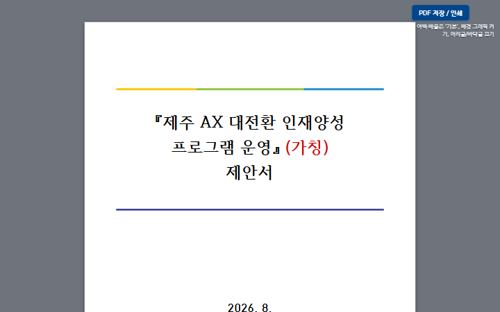
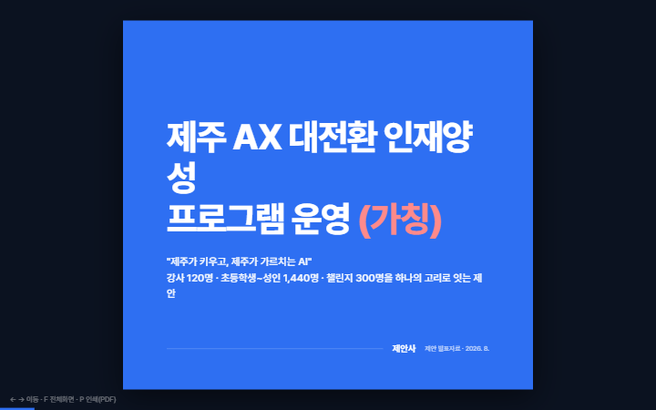
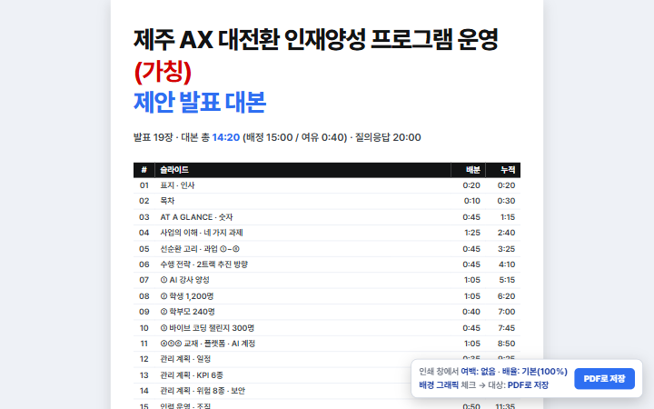
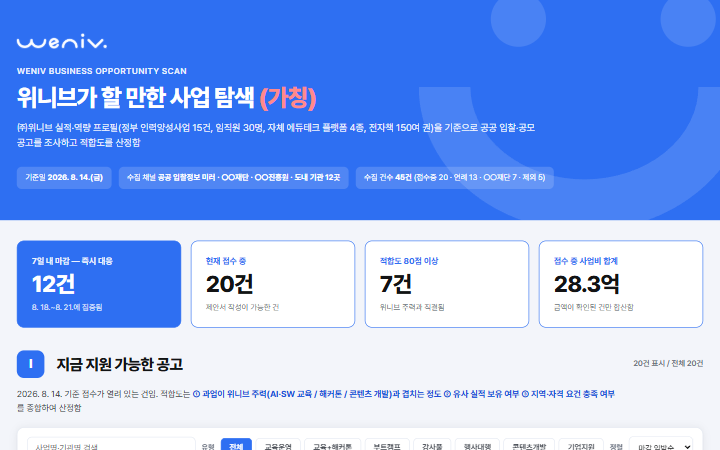
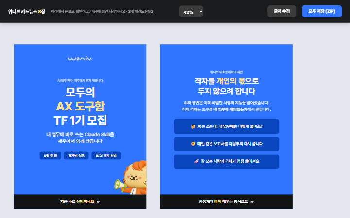
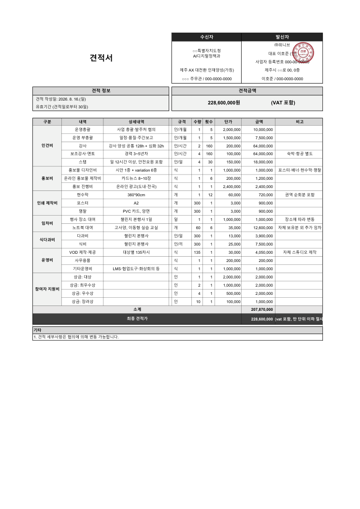

거창한 것보다, 당장 쓸 수 있는 것
견적서 하나, 수업 준비 하나.
현장에서 반복되는 작은
불편부터 해결합니다.
함께 만들고, 누구나 사용하는 AI 도구함
매번 설명하던 내 업무, 이제 스킬 하나로.
Claude와 GPT에서
활용할 수 있는 작은 업무 도구를
함께 만들고, 누구나 무료로 가져다 씁니다.
OPEN KNOWLEDGE좋은 도구는, 나눌수록 쓸모 있어지니까.
THE SKILL LIBRARY
현장의 문제에서 출발한, 우리에게 필요한 스킬들.
공유 스킬 2개 · 제작 후보 6개제공된 스킬과 1기에서 함께 만들 아이디어를 모았습니다.
다른 검색어를 입력하거나 전체 분야를 살펴보세요.
FROM SKILL TO REAL WORK
문서 한 장을 넘어, 발표와 업무 도구까지.

공고문에 맞춘 구성과 A4 인쇄용 문서
HTML · PDF
긴 제안서를 발표의 흐름으로 정리
HTML · PDF
슬라이드별 메시지와 시간 배분
HTML · PDF
사업 후보를 조건별로 살펴보는 대시보드
인터랙티브 HTML
메시지를 짧고 읽기 쉬운 카드로
HTML
항목과 산출 내역을 갖춘 업무 문서
PDF · XLSX제공받은 기존 시연 자료입니다. 문서 속 수치·일정·모집 안내는 현재 TF의 성과나 공지가 아니며, 모든 결과물이 위 두 스킬만으로 만들어졌다는 뜻은 아닙니다. 원본 형식별 다운로드 ↗
A SMALL START
복잡한 세팅보다, 지금 필요한 스킬 하나부터 시작하세요.
내 업무와 닮은 스킬을 찾고,
필요한 자료와 실행 환경을
확인하세요.
SKILL.md와 참고자료가 담긴
개별 스킬 폴더를
내려받으세요.
지침과 업무 자료를 함께 전달하고,
나의 상황에 맞게
다듬어 쓰세요.
SKILL.md 내용을 아래 요청, 회의 메모와 함께 전달하세요.
첨부하거나 붙여 넣은 SKILL.md 지침에 따라
이 회의 메모를 정리해줘.
결정 사항과 후속 할 일을 구분해줘.일반 채팅에서는 지침으로 활용합니다. 필요한 참고자료도 함께 전달하세요.
스킬 파일은 무료입니다. AI 서비스 요금과 자동 호출·도구 실행 지원은 환경에 따라 다릅니다. HWPX 변환에는 Python 실행 환경이 필요합니다.
MADE TOGETHER, IN JEJU
누군가의 사무실에서 만든 작은 도구가
옆 학교로, 또 다른
동료에게로.
모두의 AI Skill은 제주에서 시작한 모두의 AX 도구함 TF의 공개 스킬 모음입니다. AI를 잘 쓰는 방법을 개인의 노력에만 맡기지 않고, 공동체의 노하우를 누구나 쓸 수 있는 도구로 쌓아갑니다.
우리의 첫 회의 기록
견적서 하나, 수업 준비 하나.
현장에서 반복되는 작은
불편부터 해결합니다.
스킬을 폴더로 나누고 GitHub에 공개합니다.
나의 업무에 맞게
수정하고 공유합니다.
문제를 아는 사람과 도구를 만드는 사람이 만나
써 보고,
피드백하고, 다시 다듬습니다.
오리엔테이션 · 업무 문제 공유
개인 진행 사항 발표 · 피드백
개선 내용 공유 · 피드백
최종 스킬 · 결과물 캡처 정리
GOOD REFERENCES
직접 만드는 스킬과 구분해 모아둔 참고자료입니다.
YOUR KNOW-HOW MATTERS
개발 경험이 없어도 괜찮습니다.
불편했던 업무를 알려주는 것부터,
함께 만드는 일이 시작됩니다.